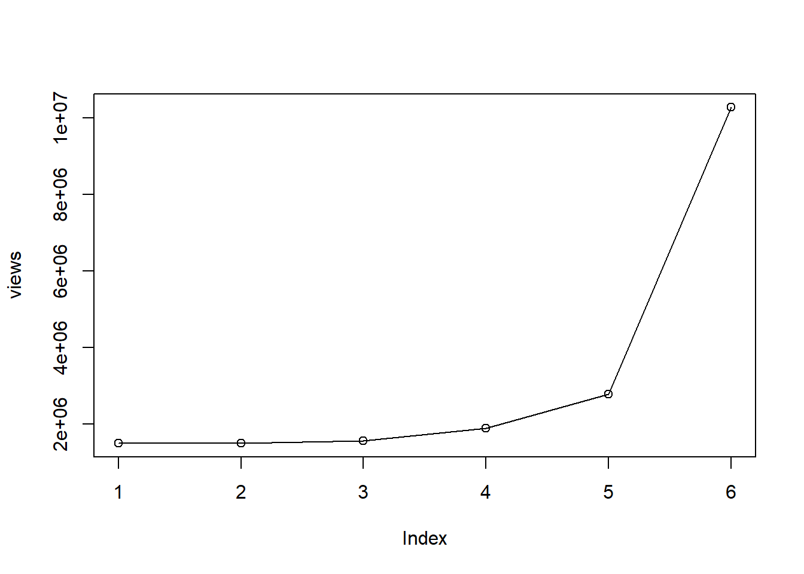

Breaking Bad
1. A brief description
Breaking Bad is an American neo-Western crime drama television series created and produced by Vince Gilligan for AMC. Set and filmed in Albuquerque, New Mexico, the series follows Walter White (Bryan Cranston), an underpaid, overqualified, and dispirited high-school chemistry teacher who is struggling with a recent diagnosis of stage-three lung cancer. White turns to a life of crime and partners with a former student, Jesse Pinkman (Aaron Paul), to produce and distribute methamphetamine to secure his family’s financial future before he dies, while navigating the dangers of the criminal underworld. Breaking Bad premiered on AMC on January 20, 2008, and concluded on September 29, 2013, after five seasons consisting of 62 episodes.
2. Logo

3. Viewership Statistics
| Season | Episodes | Viewers (millions) |
|---|---|---|
| 1 | 7 | 1.50 |
| 2 | 13 | 1.50 |
| 3 | 13 | 1.56 |
| 4 | 13 | 1.90 |
| 5A | 8 | 2.78 |
| 5B | 8 | 10.28 |
4. Graph of the viewership
5. Graph of the episode-to-episode ratings
| Season | Rotten Tomatoes | Metacritic |
|---|---|---|
| 1 | 8.3/10 | 73 |
| 2 | 9.1/10 | 84 |
| 3 | 9.2/10 | 89 |
| 4 | 9.6/10 | 96 |
| 5 | 9.5/10 | 99 |
6. Something
A short description of the observed changes that includes inline references to numbers (e.g. the viewership decreased by insert_calculated_number between seasons 3 and 5).
Breaking Bad premiered on the same night as both the NFC and AFC Championships in the 2008 NFL playoffs, an intentional decision by AMC hoping to capture the adult male viewership immediately following the planned end of the NFC game. The game ran over its time slot, cutting into Breaking Bad's timeslot in most of America. As a result, the pilot had only about 1.4 million viewers. Coupled with the ongoing writers strike, the first season did not draw as large of a viewership as they expected. However, with subsequent seasons, viewership increased, avoiding the usual trend of downward viewership that most serialized shows had. Ratings further increased by the fourth season as, prior to airing, the previous seasons had been added to Netflix, boosting interest in the show. Breaking Bad is considered the first such show to have a renewed burst of interest due to the show being made available on Netflix. The second half of the final season saw record viewership, with the series finale reaching over 10.3 million viewers.